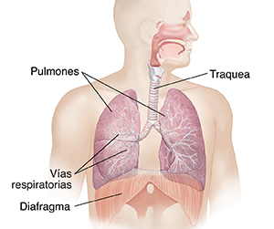

En esta página recopilaremos información sobre uno de los órganos vitales para nosotros: Los Pulmones.
Los pulmones son el centro del sistema respiratorio. El sistema respiratorio también incluye la tráquea, los músculos de la pared torácica y el diafragma, los vasos sanguíneos y otros tejidos. Todas esas partes posibilitan la respiración y el intercambio de gases.
